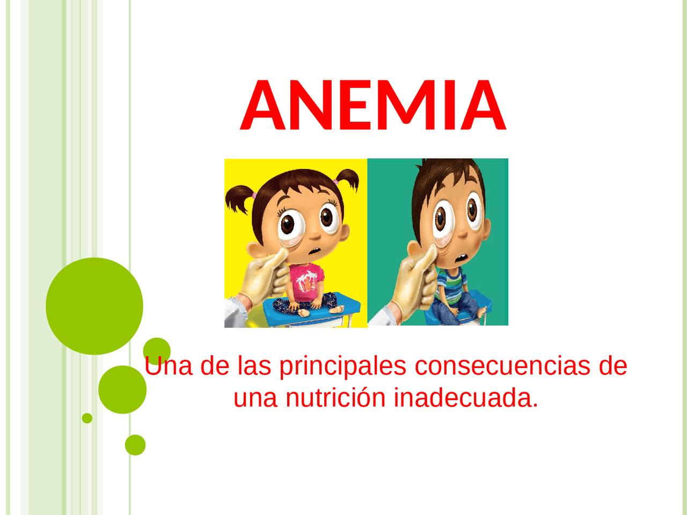
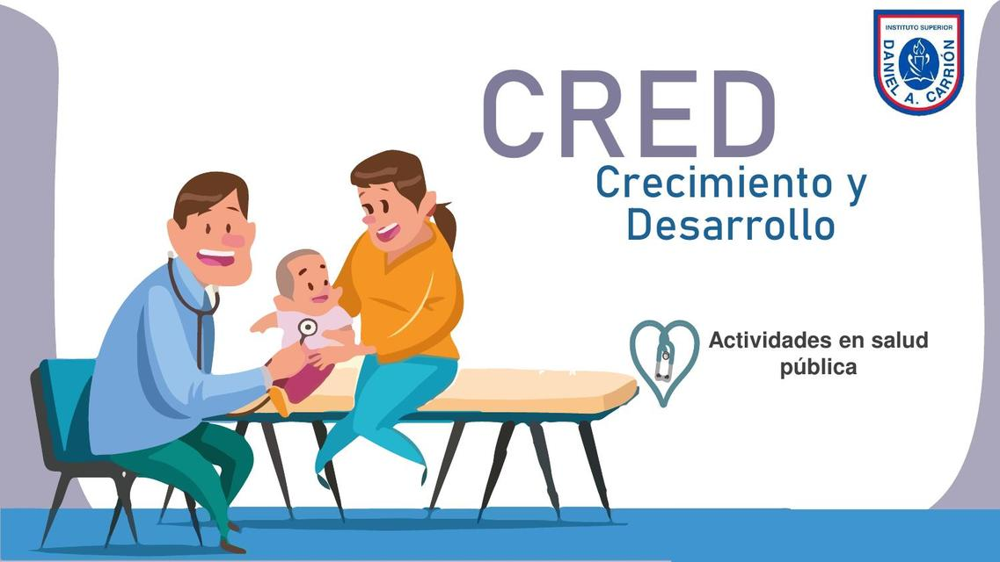
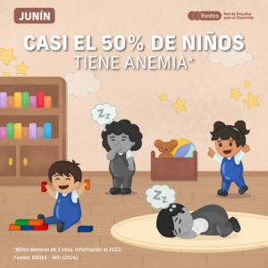

INDICADORES DE DESEMPEÑO (ID) Y COMPROMISOS DE MEJORA
INDICADOR 2025 N° 01
Porcentaje de niñas y niños de 12 a 18 meses, con diagnóstico de anemia entre los 6 y 11 meses, que se han recuperado
INDICADOR 2025 N° 02
Porcentaje de niñas y niños menores de 12 meses, que reciben un paquete integrado de servicios: CREO, vacunas, dosaje de hemoglobina para descarte de anemia y suplementación con hierro ..
INDICADOR 2025 N° 03
Porcentaje de niños y niñas de 6 a 35 meses, con diagnóstico de anemia del Total de los casos esperados de anemia.